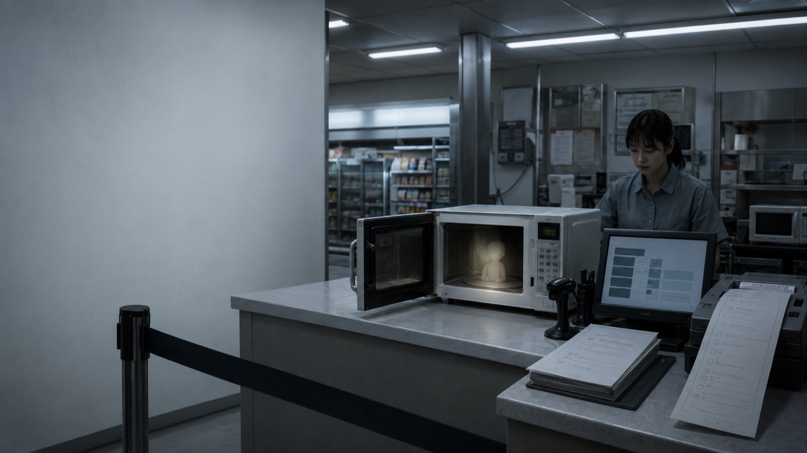
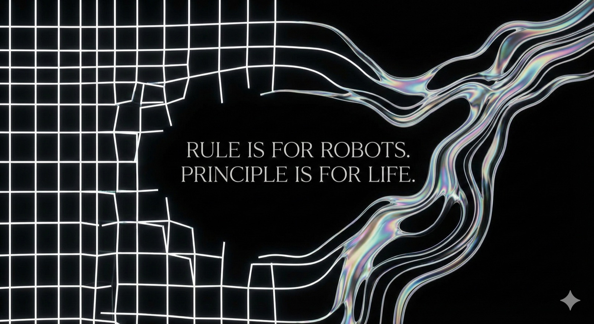
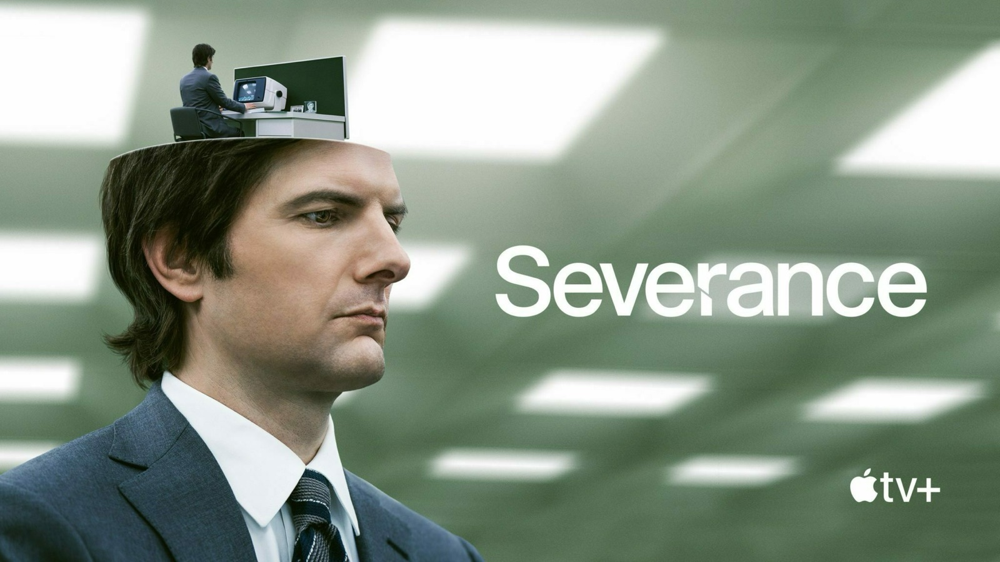

NOTES / RESEARCH
从一个疑问，
继续往下想。

02 / 文化观察 · 2026.06.16 · 机核
新怪谈如何从日常场景里长出来
从 sketch 的喜剧机制出发，观察荒谬规则如何进入日常流程，并逐渐变成令人不安的现实。
站内阅读 ↗
03 / AI 与生活 · 2026.01.20 · 机核
规则的死亡：AI系统意味着活在flow中，而非遵循脚本运行
从一套只坚持了三天的睡眠规则出发，思考 AI 系统如何根据原则和当下情境调整行动。
站内阅读 ↗
04 / 影视评论 · 2025.03.07 · 机核
深度解析：《人生切割术》第二季--“意识殖民与后现代劳役的终极寓言”
从角色、空间、哲学和制作细节切入，解读剧中的身份分裂与意识商品化主题。
站内阅读 ↗